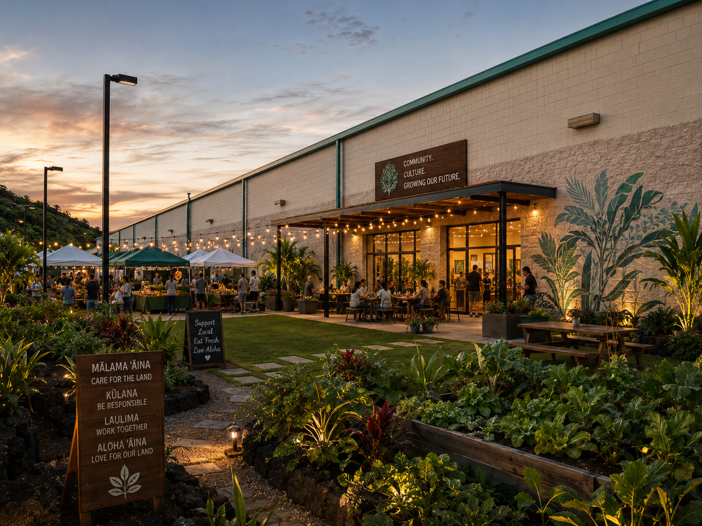
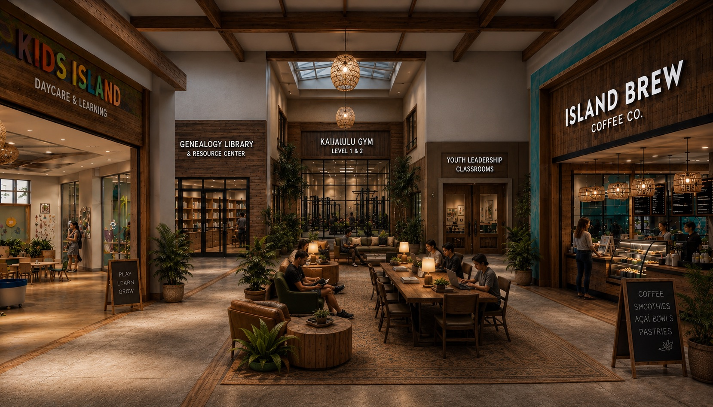
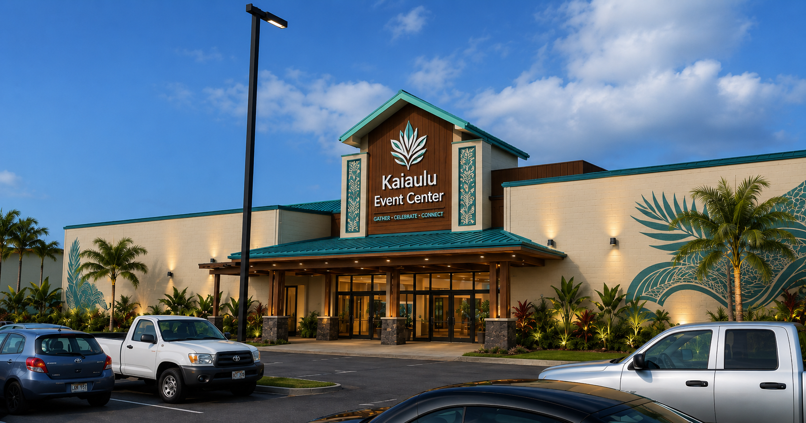
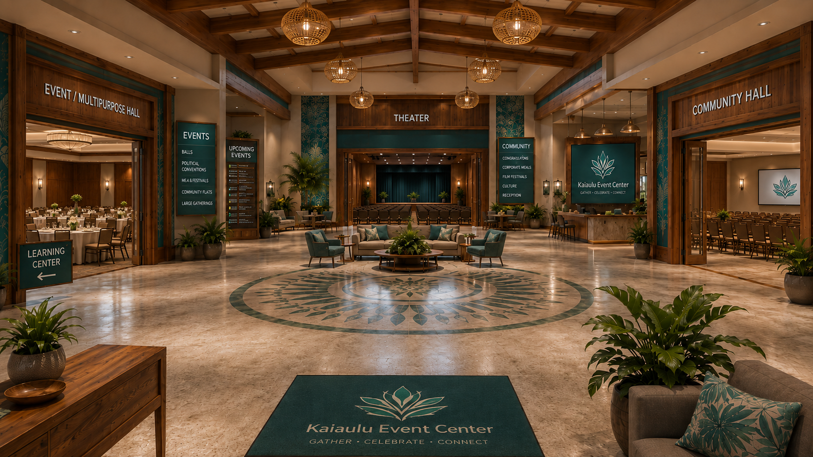
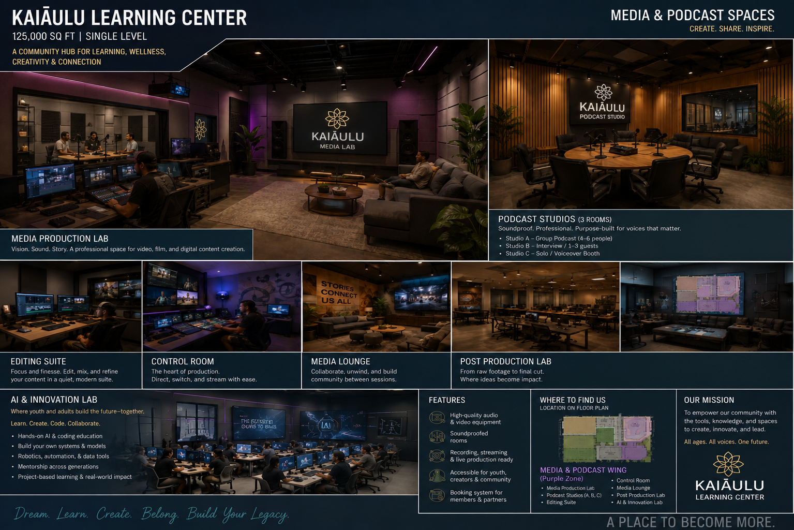
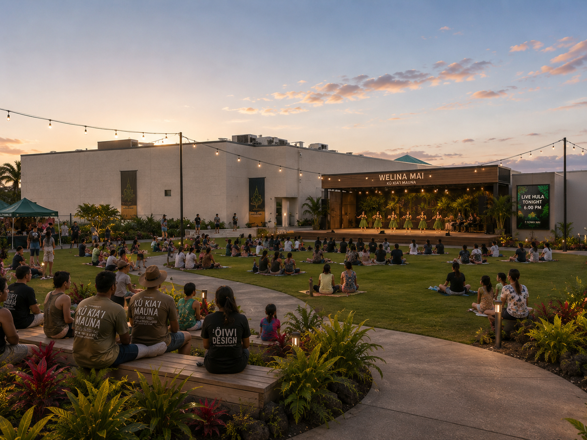
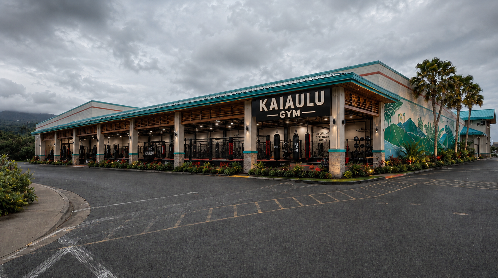
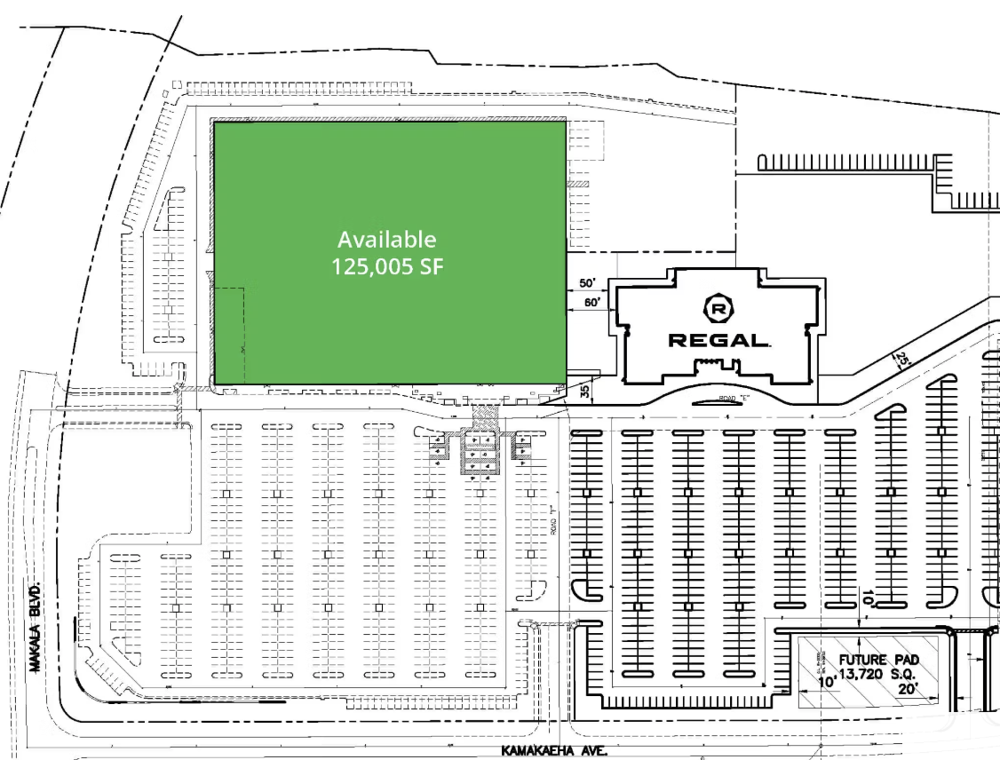
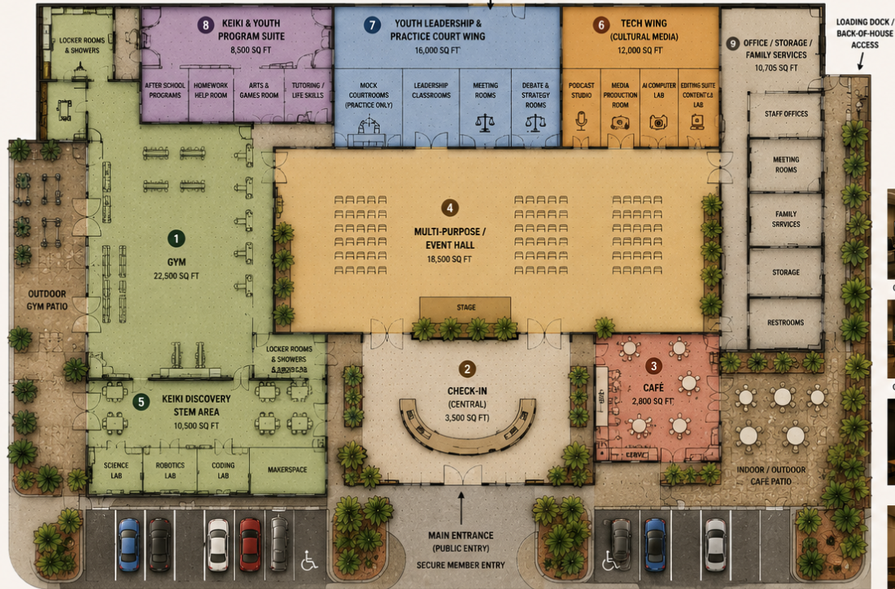

At A Glance
Building Strong Leaders
Kaiāulu is imagined as a Hawaiian-rooted tech and wellness hub in West Hawaiʻi: a place for keiki, youth, ʻohana, and kūpuna to learn, train, gather, heal, and grow into community leaders.
Future Community Proposal
Kaiāulu is a future proposal for a secure school-campus-style community center and leadership development ecosystem. It is not currently open.
The vision includes learning spaces, cultural education, wellness and fitness areas, creative media, a podcast and recording studio, a café, a family courtyard, youth leadership, workforce readiness, and college support for adults and kūpuna.
At A Glance
Kaiāulu is imagined as a Hawaiian-rooted tech and wellness hub in West Hawaiʻi: a place for keiki, youth, ʻohana, and kūpuna to learn, train, gather, heal, and grow into community leaders.
Current Phase
This concept is in early planning. The next steps are cultural guidance, community partnerships, site planning, and funding conversations before any public opening.
Leadership Development
At Kaiaulu, leadership is at the heart of everything we do. Every program, service, and opportunity is designed to help individuals grow into leaders who will strengthen Hawaiʻi for generations to come. Whether serving in classrooms, hospitals, businesses, government offices, community organizations, or cultural spaces, our participants are empowered to lead with purpose, integrity, and aloha.
Leadership can take many forms: teachers, doctors, nurses, engineers, entrepreneurs, farmers, cultural practitioners, public servants, policymakers, nonprofit leaders, and community advocates. Kaiāulu supports youth, adults, and kūpuna in discovering their strengths, gaining real-world skills, and growing with confidence, cultural grounding, civic responsibility, mentorship, service, and wellness.
Proposed Spaces
The long-term proposal focuses on youth leadership, workforce readiness, local business support, cultural events, family safety, community wellness, and preparing people to actively contribute to Hawaiʻi's future.
Vision Concepts
These images are visual concepts only. They are not photos of an open or completed site, and the vision may change as planning, consultation, and community guidance continue.









Kaiaulu is not simply building programs. We are building leaders. By investing in our people today, we are helping create a stronger Hawaiʻi tomorrow.